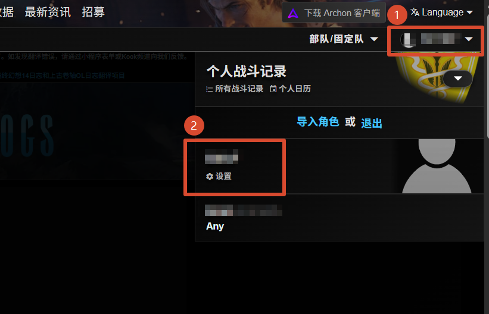
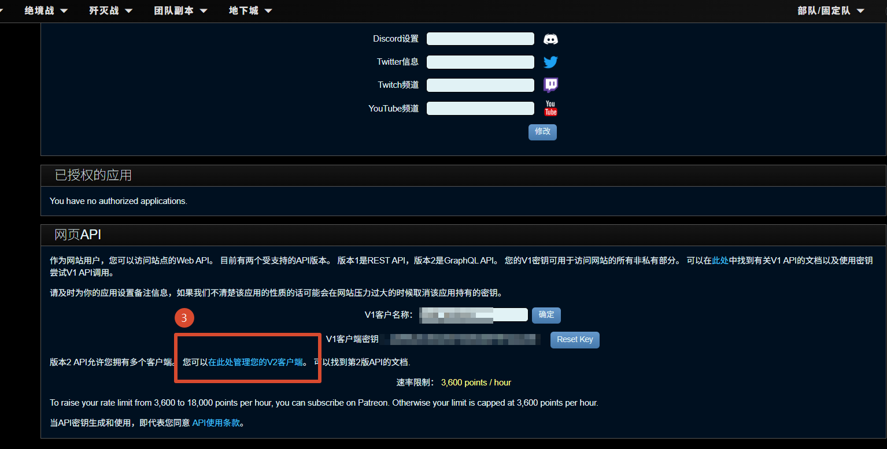
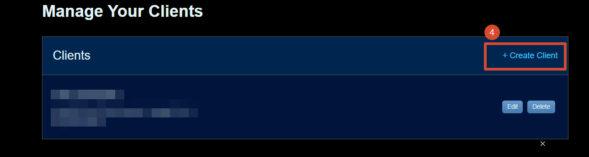
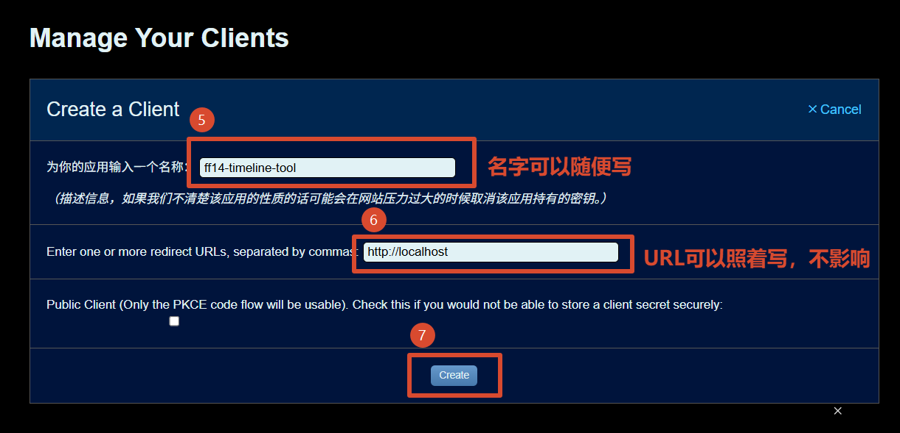
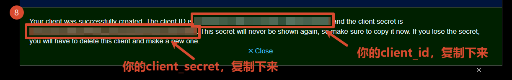

FFLogs API 申请教程
本教程介绍如何在 FFLogs 上申请 API 密钥，获取 Client ID 和 Client Secret，以便在工具中使用。
1. 登录并进入设置
- 访问 fflogs.com 登录你的账号。
- 点击右上角的头像下拉菜单（步骤 ①），在弹出的用户面板中点击带有齿轮图标的 设置 选项（步骤 ②）。

图 1：点击右上角头像，再点击「设置」
2. 找到 API 客户端管理入口
- 在账号设置页面向下滚动，找到 网页API 区块。
- 点击其中的链接 「在此处管理您的V2客户端」（步骤 ③），进入 V2 API 客户端管理页面。

图 2：找到「网页API」区块，点击管理 V2 客户端的链接
3. 创建新客户端
- 进入 Manage Your Clients 页面后，点击右上角的 + Create Client 按钮（步骤 ④）。

图 3：点击「+ Create Client」创建新的 API 客户端
4. 填写客户端信息
- 在 修改你的应用名称 字段中填入一个便于识别的名称，例如
ff14-timeline-tool（步骤 ⑤，名字随意）。
- 在 Change your redirect URLs 字段中填写
http://localhost（步骤 ⑥，填此值即可，不影响使用）。
- 点击 Change 按钮提交（步骤 ⑦）。

图 4：填写应用名称和重定向 URL，然后点击「Change」
5. 保存 Client ID 和 Client Secret
- 提交成功后，页面会弹出提示框（步骤 ⑧），显示你的 Client ID 和 Client Secret。
- 请立即将两者复制并妥善保存，填入工具的 FFLogs API 配置对话框中即可使用。

图 5：复制弹框中的 Client ID 和 Client Secret
⚠️ Client Secret 仅在此时显示一次，关闭弹框后将无法再次查看。如果忘记保存，需要删除该客户端并重新创建。